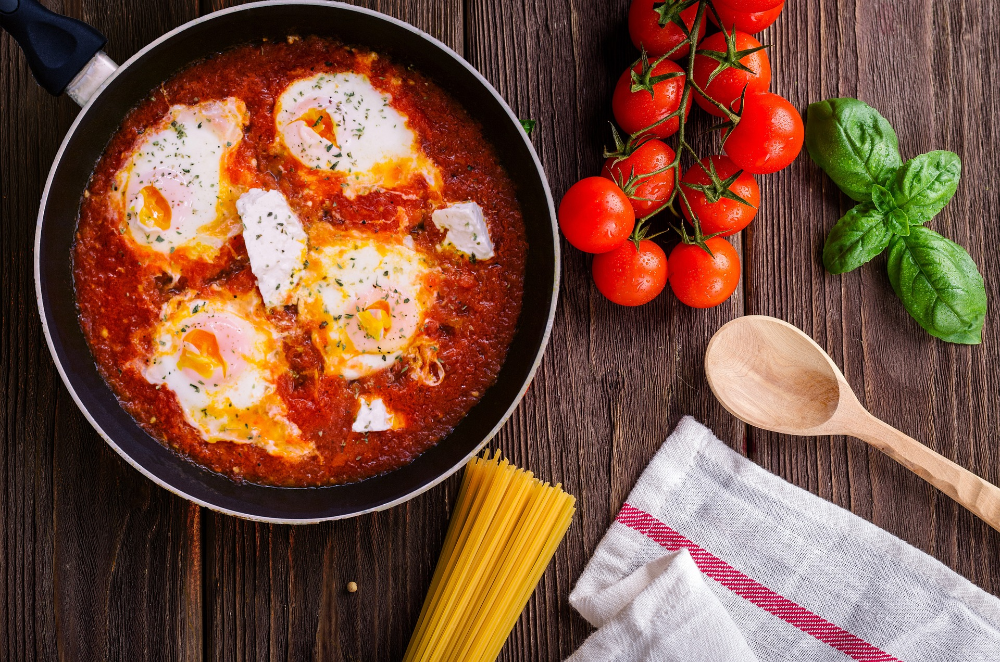
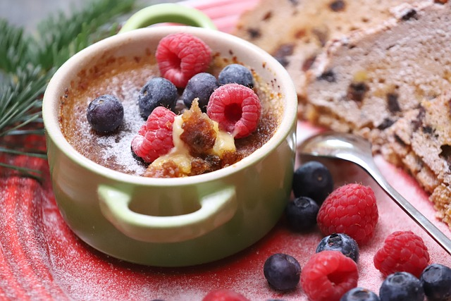
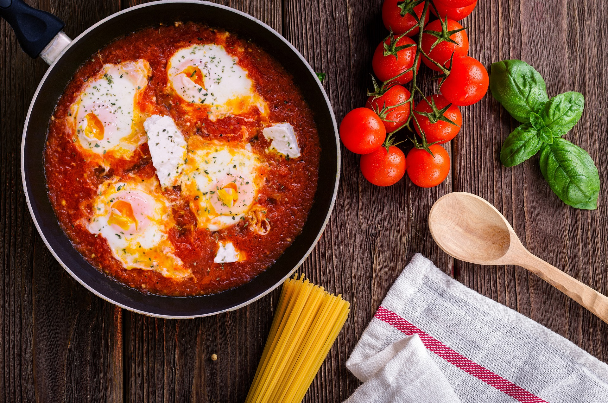
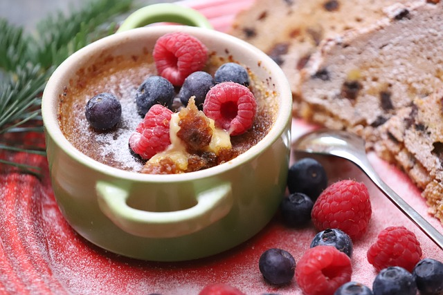

Crème brûlée
This rich and creamy custard dessert is said to have originated in France in the 17th century. The name "crème brûlée" means "burnt cream" in French, and it refers to the caramelized sugar topping that is traditionally added to the dish.
- 1 cup (240ml) heavy cream
- 1/2 cup (100g) granulated sugar
- 4 large egg yolks
- 1 tablespoon (15ml) vanilla extract
- 1/4 teaspoon (1g) salt
- 1/2 cup (100g) granulated sugar
- 2 tablespoons (30ml) water
Here's a list of the ingredients you will need to make crème brûlée:
- In a medium saucepan, heat the cream and sugar over medium heat until the sugar dissolves and the mixture comes to a simmer. Remove from the heat and let cool slightly.
- In a separate bowl, whisk together the egg yolks, vanilla extract, and salt. Gradually whisk in the warm cream mixture until well combined.
- Strain the custard through a fine-mesh sieve into four ramekins or ovenproof glasses. Divide the custard evenly between the ramekins.
- Place the ramekins in a baking dish and pour enough hot water into the baking dish to come halfway up the sides of the ramekins
- Bake for 35-40 minutes, or until the custard is set around the edges but still slightly jiggly in the center.
- Remove the ramekins from the baking dish and let cool completely on a wire rack.
- To make the caramel topping, heat the sugar and water in a small saucepan over medium heat, swirling the pan occasionally, until the sugar melts and turns a deep amber color.
- Immediately pour the caramel evenly over the cooled custards. Let the caramel set completely before serving.
- To serve, run a small knife around the edges of each ramekin to loosen the custard, then invert the ramekins onto plates. Enjoy!
Instructions:
 



why it is favourite
Crème brûlée is a popular dessert because it offers a delightful contrast in textures and flavors. The rich, creamy custard base provides a smooth, velvety mouthfeel, while the thin layer of caramelized sugar on top adds a delightful crunch and sweetness. The combination of these two contrasting textures creates a uniquely satisfying eating experience that has captivated palates worldwide.
Recipe clicks